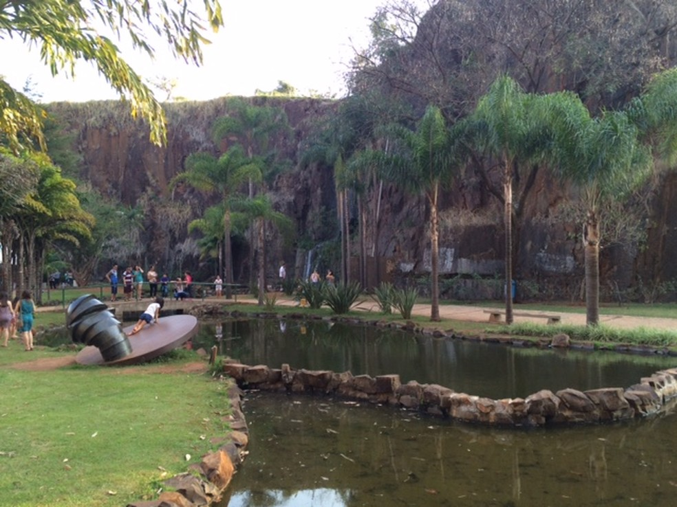

Inaugurado em 1977 como Estação Astronômica de Campinas, foi o primeiro observatório municipal do Brasil, além de ser pioneiro na oferta de ação educativa regular. Tem como missão congregar indivíduos interessados na prática da astronomia; divulgar a astronomia entre os estudantes e o público em geral; manter intercâmbio científico entre entidades congêneres; realizar pesquisas no campo da astronomia e ciências afins.
Endereço: Estrada do Capricórnio – Serra das Cabras Distrito de, Campinas - SP, 13106-001
A praça Ulisses Guimarães, também conhecida como antiga Pedreira do Chapadão, tem cerca de 130 mil metros quadrados. Além de uma praça central para shows, há outras atrações, como espelho d’água com cascata, canteiros e plantas, pista de cooper, ciclismo e skate.
Em 16 de dezembro de 1994, foi inaugurado o Memorial Ulisses Guimarães. A escultura é composta por cerca de 2.000 chapas de aço recortadas e soldadas, formando o conjunto que pesa 2,5 toneladas, com 13 metros de altura. Faz parte do conjunto, uma frase de Ulisses Guimarães, marcada no chão e na parede de pedra. “Nós não viemos aqui para ter medo”. A obra é do escultor Fábio Penteado.
Em 2013, o local foi revitalizado após ficar abandonado por dois anos. Além da repaginada nos equipamentos já existentes, a pedreira ganhou novas atrações e espaços, como o mirante de 30 metros de altura. Por questões de segurança foi colocado um alambrado novo no entorno do parque e construído um prédio administrativo.
Além de futebol, basquete e vôlei, a praça permite as praticas de corrida e caminhada na pista de 2 mil metros recuperada. Na pedreira, as árvores existentes foram podadas na época e houve o plantio de 4 mil metros de grama esmeralda, 500 mudas de árvores nativas (jequitibás, jatobás e ipês, entre outras), além de 20 mil mudas de flores e plantas ornamentais.
Endereço: R. Dr. Alcídes Carvalho, S/n - Jardim Chapadão, Campinas - SP
Inaugurada em 1872, o complexo da antiga Fepasa é conhecido hoje por Estação Cultura “Antonio da Costa Santos” (leva o nome do prefeito da cidade assassinado em 2001, durante o exercício do cargo), administrado pela Secretaria de Cultura de Campinas. Serviu como estação ferroviária até 15 de março de 2001, época em que partiu o último trem de passageiros.
É um importante espaço multicultural da cidade, palco de apresentações artísticas diversas, exposições, feiras, eventos alternativos e gastronômicos, entre outros.

A local fica aberto ao público durante o dia. À noite, funciona somente em dias de apresentações artísticas. Um passeio pelo seu interior leva o visitante aos tempos áureos das estações de trem de passageiros. A Fepasa também oferece ao visitante uma oportunidade de ver uma exposição de ferromodelismo com uma maquete, aberta aos sábados para visitação.
Endereço: Praça Mal Floriano Peixoto - Vila Rialto, Campinas - SP, 13010-061